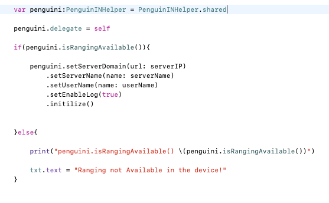

SDK and Sample Application Delivery
The iOS SDK is shared as a .framework file and the sample application as a build-able source code to generate the required .ipa file. This file can be integrated in XCode project by drag and drop framework file into (Frameworks, Libraries, and Embedded Content section).
To Download the iOS SDK and Sample app Click here.
Sample Application
The sample app will initialize SDK over controlled configurations then return the detected PoI list periodically. The list contains the list of PoI which are most likely to be present in the vicinity of the user.
Detected PoI list is fetched from the SDK and of course requires complete BLE beacon roll-out and site calibration data to have been completed.
The presence of at least one BLE beacon is required.
The steps below explain how to run the sample application:
-
install Sample App. You may need to build the sample app code to generate the needed .ipa file. If a build/export ipa is needed, ensure that the Enable Bitcode is set to No in the Build Settings
-
Grant all requested permissions.
-
Main screen will show the following:
- Detected PoIs (Shows Detected PoIs list as concatenated string: PoIs ID1_TrustFactor1#PoIs ID2_TrustFactor2# )
- Current SDK Status:
- Initializing.
- Loading Data.
- Stopped for Empty Data.
- Detection.

SDK Configuration
It is likely that during the development cycle, parameters for the SDK and the sample app will change. To change SDK configuration you can start modifying the following parameters:
- Server IP.
- Service Name.
- User Name.
Code Example:
-
Initialization Code
 -
Start Scanner :
When the didCompleteLoading fired you can start scanner by calling PenguinINHelper.shared.startScanner().
-
Detected PoIs ID and status from SDK :
One can fetch results by calling PenguinINHelper.shared.getDetectedPoIs() or by listening to didPointOfInterestChange().